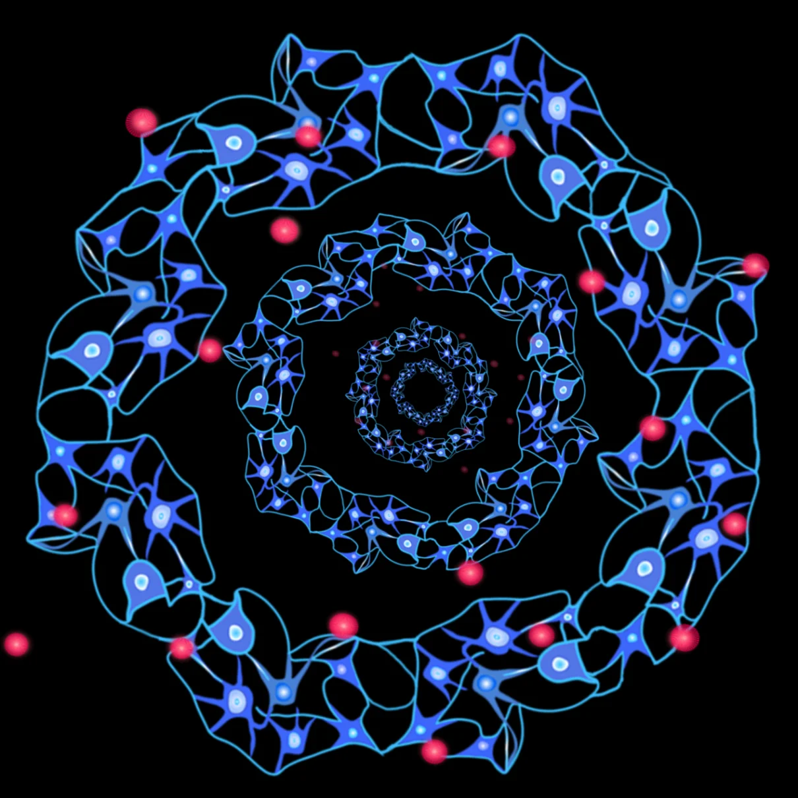
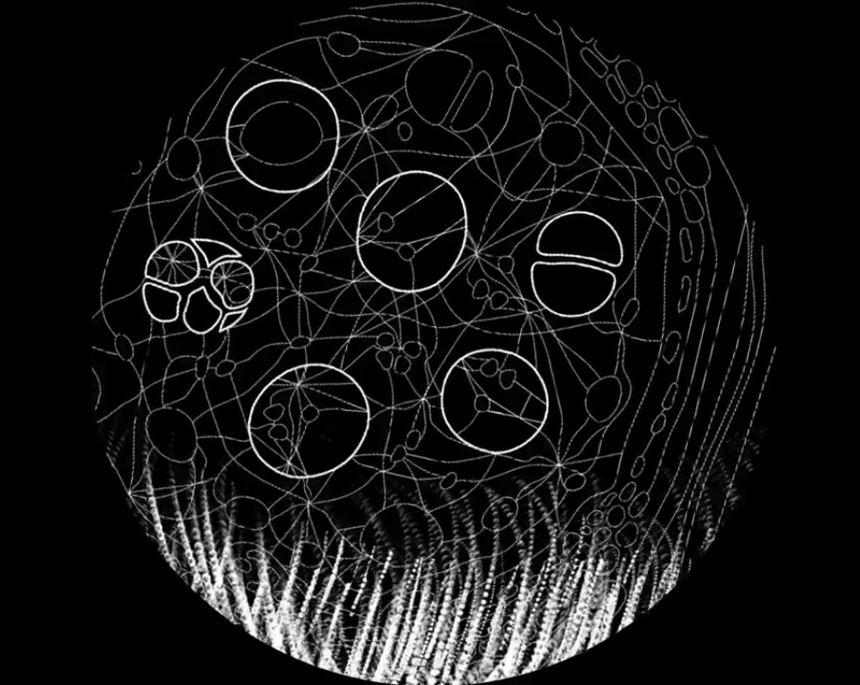

Proyecto de investigación artística
Exploración audiovisual que investiga la relación entre texto, imagen y sonido como materiales de composición en entornos digitales.
Texografías es un proyecto de investigación artística que explora las relaciones entre texto, imagen y sonido como materiales de composición audiovisual. La obra investiga cómo los distintos lenguajes puedes transformarse en estructurales visual y rítmicas dentro de un entorno digital.
A través de procesos de experimentación audiovisual, el proyecto articula elementos tipográficos, estructuras gráficas y dinámicas sonoras que configuran un espacio perceptivo donde el texto se expande hacia una dimensión visual y sonora.
El proyecto permite abordar la relación entre escritura, visualización y sonido como herramientas de creación audiovisual. En este sentido, Texografías funciona como un laboratorio de experimentación donde el lenguaje se convierte en materia compositiva.
También permite reflexionar sobre los cruces entre poéticas digitales, tipografía expandida y música visual, introduciendo estrategias de traducción entre lenguaje, imagen y sonido.
Texografías se inscribe en un campo de prácticas de investigación artística donde la creación funciona como forma de producción de conocimiento.
Dentro del archivo, el proyecto permite pensar las relaciones entre escritura, visualización y experiencia audiovisual, ampliando las posibilidades de exploración estética en entornos digitales.

▶